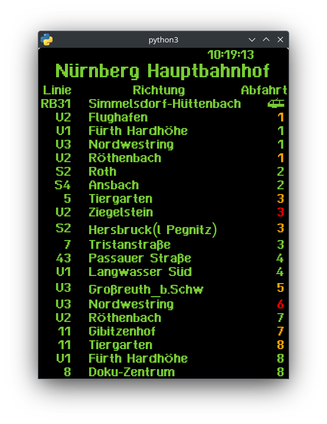

The Infobean shows departures of any one, or even multiple, stations in Nürnberg. It can be configured with a config file passed to the program at startup
A config file is a text file in yaml format.
It currently expects two things:
because using a basic font like Arial or Times New Roman for a display like this is a little boring, we got the idea to copy the font from the departure displays commonly found on Tram stations